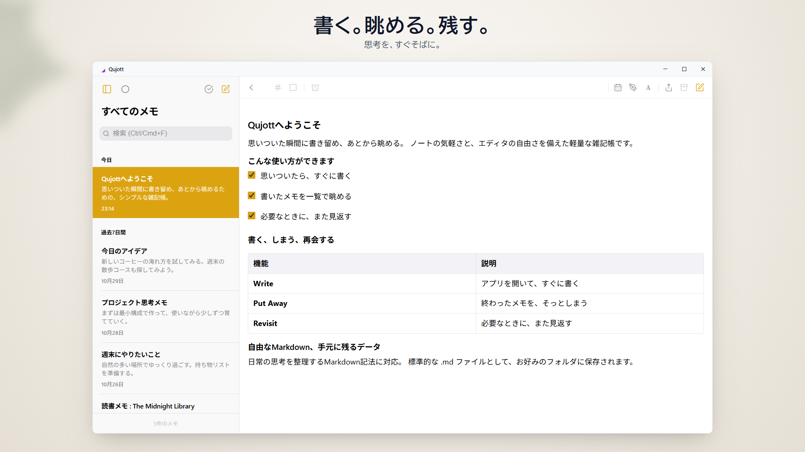
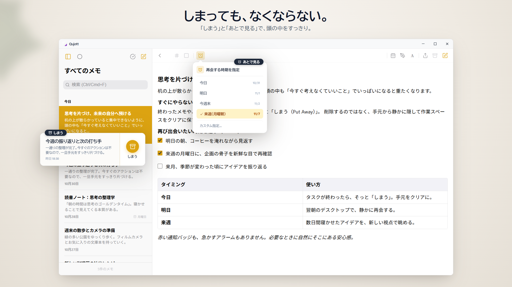
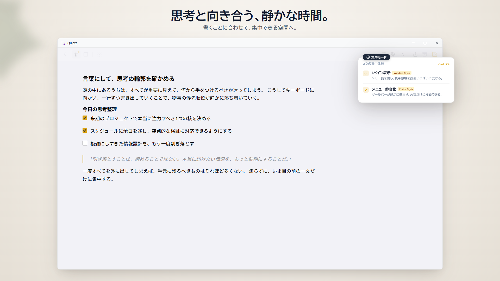
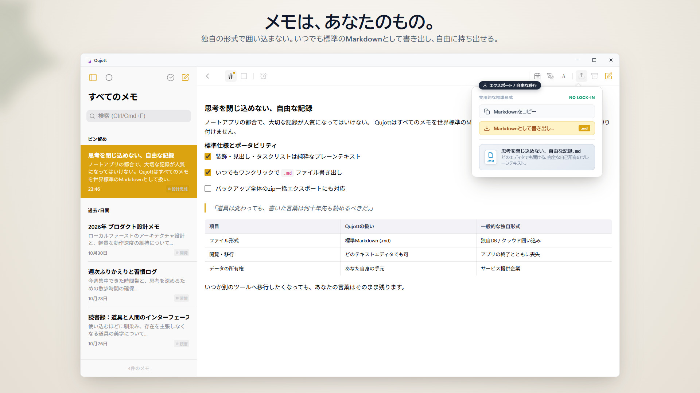
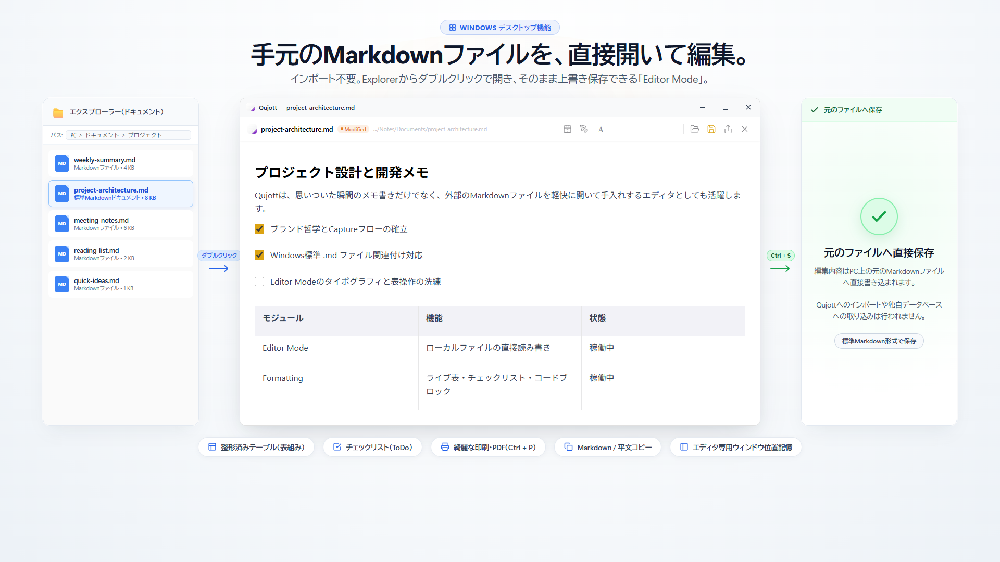
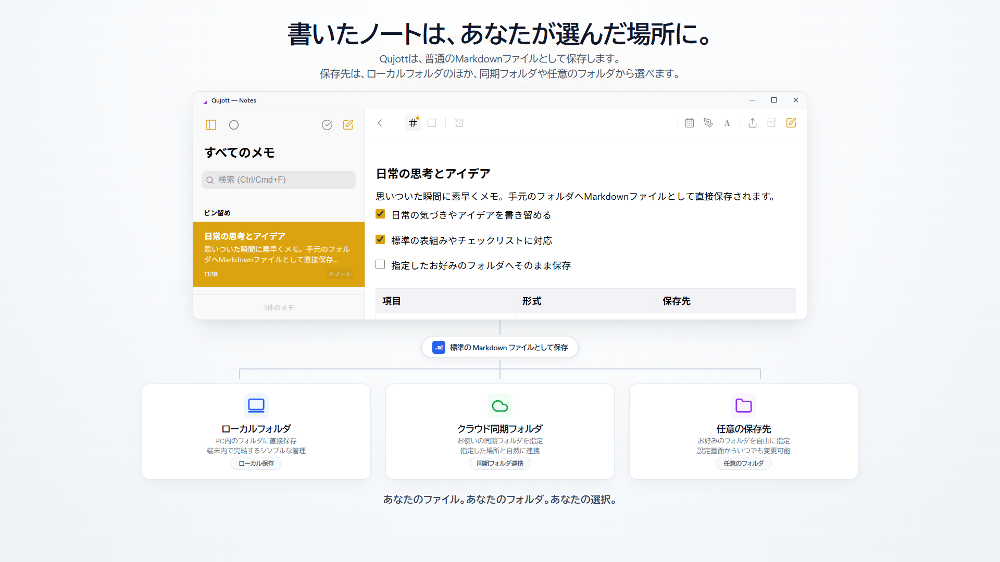
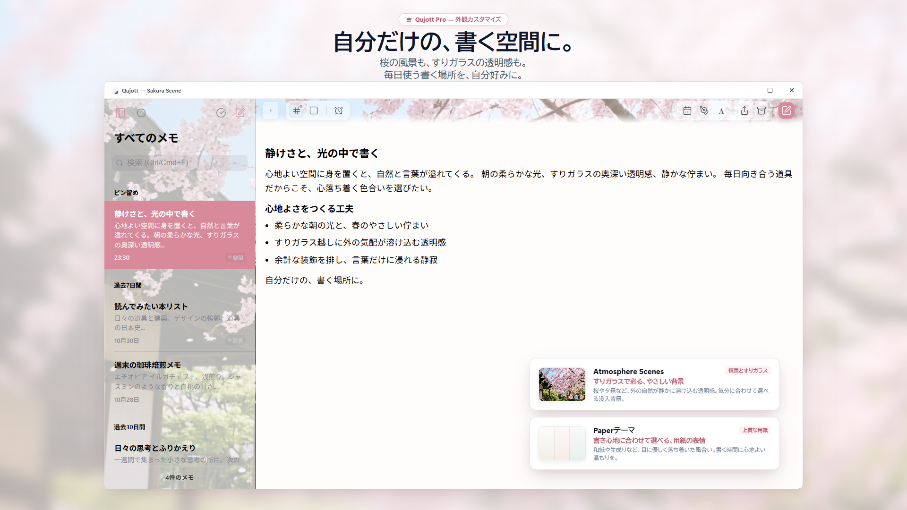

Qujott
思いついた瞬間に、気軽に書き留め、
あとから眺められる。
Capture your thoughts with ease,
and revisit them whenever you like.
Qujott（クジョット）は、ノートの気軽さと見やすさ、テキストエディタの自由さと汎用性を備えた、軽量な雑記帳です。
整理はあとで。まずは、思考をすぐそばに。
標準的なMarkdown形式に対応。テキストファイルとして、自由に保存・編集できます。
Qujott combines the simplicity and readability of a notepad with the freedom and versatility of a text editor—all in a lightweight digital notebook.
Organize later. Keep your thoughts close.
Supports standard Markdown. Save and edit your notes as plain text files, wherever you choose.


思考とメモ一覧が自然に並ぶ、端正で静かな2ペイン空間 A clean two-pane space keeping your thoughts and note list effortlessly in view
机の横の紙のメモ帳のように、すぐ書けること。 Like a paper notepad resting beside your desk.
Qujottは、複雑なタスク管理や巨大な知識ベースを作るためのツールではありません。
机の横に置いてある紙のメモ帳のように、思いついたその瞬間に迷わず書き始められることだけにこだわりました。
事前のフォルダ分けを悩む必要も、タグ付けを強制されることもありません。
頭に浮かんだ言葉をそのまま書き留め、すぐそばに置いておく。整理はあとから眺めながら行えます。
Qujott is not an overwhelming database or a complicated task management system.
Like a paper notepad resting beside your keyboard, it is designed for one thing: letting you start writing the instant a thought arrives.
No folder hierarchies to navigate upfront. No mandatory tags to file.
Capture your thoughts first and keep them close. Organization can wait until you browse them later.
書く、しまう、再会する Write, Put Away, Revisit
日常の思考を淀みなく循環させる、3つのシンプルな仕組み A natural cycle designed to keep your thoughts close and your mind clear
Immediate Capture
すぐ書く Frictionless Capture
アプリを開いた瞬間から迷わず書き始められます。思考が消えてしまう前に、そのまま言葉へ。 Start typing the instant you open the app. Zero friction between thought and text before ideas fade away.
Put Away
いったん、しまう Tuck Away
書き終わったメモは削除するのではなく、視界からそっと「しまい」ます。手元をすっきりと保てます。 Done with a note? Gently tuck it away without deleting it. Keep your view clean while preserving every thought.
Revisit
静かに再会する Quiet Reunion
今日、明日、来週など、必要なタイミングで自然に再浮上。通知やアラームで急かすことはありません。 Resurface notes today, tomorrow, or next week. No noisy alarms or red badges—just a natural reunion when the timing is right.


しまっても、なくならない。「しまう」と「あとで見る」で作業スペースを常にすっきりと保てます Out of sight, never lost. Put notes away and bring them back naturally when you choose to revisit them.
思考と向き合う、静かな時間。 Just you and your thoughts.
日常のメモに必要なMarkdown記法と、思考に深く潜るためのFocus Mode Essential formatting and a dedicated single-pane space shaped around focused writing
見出し、チェックリスト、表（テーブル）、引用など、日常のメモに必要な記法に対応しています。
ワンクリックで1ペインの「Focus Mode」に切り替えれば、サイドバーもリストも静かに隠れ、思考と文字だけの静寂な空間が広がります。
Full support for essential writing: headings, checklists, tables, blockquotes, and links.
Switch to single-pane Focus Mode anytime to gently hide the sidebar and memo list, creating a quiet sanctuary dedicated purely to writing.


メモ一覧を隠して執筆領域を広げる「1ペイン表示」と静音化で、目の前の言葉だけに没頭できるFocus Mode Single-pane layout and quiet interface styling remove distractions, keeping your thoughts front and center.
メモは、あなたのもの。 Your notes belong to you.
Qujottは、標準的なMarkdown形式を採用しています。ノートは特定のアプリに縛られず、ほかのテキストエディタでも開いて編集できます。いつでも自分のデータとして扱える、長く使い続けられる雑記帳です。 Qujott uses standard Markdown files, so your notes are never locked into a proprietary format. Open and edit them with other text editors, and keep your data accessible for the long term.


独自のデータベースに縛られず、手元の資産として自由に持ち出せる標準Markdownファイル Standard Markdown files with zero proprietary lock-in—accessible anywhere, anytime.
手元のMarkdownファイルを、直接開いて編集。 Open and edit your Markdown files directly.
Qujottは、既存のMarkdownファイルをそのまま開いて編集できます。インポートや変換は不要。編集した内容は元のファイルに保存されます。Windows Explorerからダブルクリックするだけで素早く立ち上がり、軽量なテキストエディタとしても心地よく使えます。 Qujott lets you edit existing Markdown files without importing or converting them. Your changes are saved directly to the original file. Simply double-click any file in Windows Explorer for a fast, focused editing experience.


インポート不要。エクスプローラーから直接開き、Ctrl+Sで元のファイルへ上書き保存 Open instantly from File Explorer and save directly in-place with Ctrl+S—no database import needed.
好きなフォルダに保管して、自由に管理できる。 Store and manage your notes in any folder you choose.
ノートの保管場所は、あなたが選んだフォルダで管理できます。完全ローカルのフォルダでプライベートに使い続けることも、OneDriveなどの共有・同期フォルダを利用して複数PCから同じノートを扱うことも可能。利用環境や好みに合わせて、自由に保存場所を選べます。 Keep your notes organized in any folder you prefer. Store them entirely locally for maximum privacy, or connect to sync services like OneDrive to work seamlessly across multiple PCs. Choose the storage location that fits your workflow.


ローカル保存、クラウド同期フォルダ、外部ドライブなど、ノートの保管場所はあなたの自由 Local folders, cloud-synced folders, or external drives—you choose where your notes live.
Make Qujott yours.
自分好みの佇まいと、画面に合わせた最適な表示倍率 Personalize your writing environment and display scale
Qujott は、思考を書き留めるメモ機能、Markdown編集、Focus Mode、Put Away、Revisit、Shared Folder、ローカル保存など、本質的な道具としての機能をすべて無料で提供します。広告もサブスクリプションもありません。
UI表示倍率（UI Scale・v1.2.0 新機能）
お使いのPCや高解像度モニターに合わせて、アプリ全体のUI表示倍率を 80% / 100%（標準） / 120% / 140% / 160% から選べるようになりました。編集本文の文字サイズ調整（A--〜A++）とも自然に連動し、どんな画面環境でも快適な視認性で執筆できます。
Qujott Pro（US $4.99 / 買い切り）
毎日使う道具を自分好みの空間に仕立てるための外観カスタマイズです。桜（Sakura）やすりガラス効果が美しく溶け込むAtmosphere Scenes、紙の温もりを感じるPaperテーマなど、気分や部屋の明かりに合わせた佇まいを選べます。機能を制限して買わせるためではなく、「自分のQujottにしたい」と感じたときにお選びいただけるProです。
Qujott provides all essential experiences—Immediate Capture, Focus Mode, Put Away, Revisit, Markdown editing, and local-first storage. Completely free with no ads and no subscriptions.
UI Display Scaling (New in v1.2.0)
Adjust the overall UI scale (80%, 100% Default, 120%, 140%, 160%) to fit your display and monitor resolution. Seamlessly combines with editor text sizing (A-- to A++) so you can write comfortably in any environment.
Qujott Pro (US $4.99 / One-Time Purchase)
Personalize your workspace with immersive Atmosphere Scenes (such as Sakura), frosted glass depth, and paper-inspired themes. An aesthetic invitation to make your daily writing tool feel calm, comfortable, and truly yours.


すりガラスが美しく溶け込むAtmosphere Scenes（Sakura）と、画面に合わせた表示倍率調整 A writing space that feels like your own. Personalize it with Atmosphere Scenes and custom display scaling.